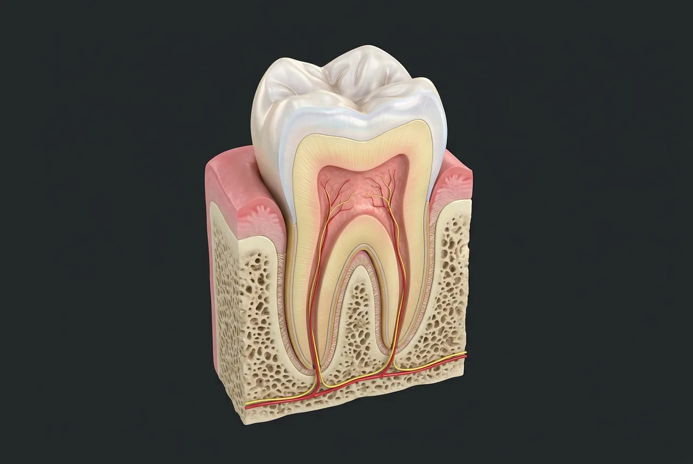
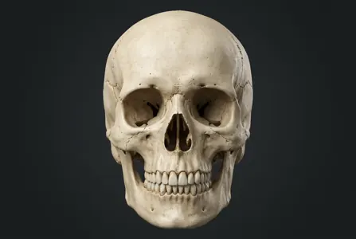

Molar cuspsMesial and distal surfacesDentinoenamel junctionFacial and lingual surfacesPulp hornsGingivaPulp chamberCementoenamel junctionPeriodontal ligamentRoot canalCementumTooth rootAlveolar boneApical foramenOcclusal surfaceSuperior alveolar nerve branches (V2)Anatomical crownEnamelDentinRoot furcationInferior alveolar nerve (V3)Apical neurovascular bundle- 01Anatomical crown
- 02Enamel
- 03Dentin
- 04Pulp chamber
- 05Tooth root
- 06Root canal
- 07Alveolar bone
- 08Gingiva
- 09Occlusal surface
- 10Molar cusps
- 11Root furcation
- 12Apical neurovascular bundle
- 13Dentinoenamel junction
- 14Pulp horns
- 15Apical foramen
- 16Cementum
- 17Periodontal ligament
- 18Cementoenamel junction
- 19Mesial and distal surfaces
- 20Facial and lingual surfaces
- 21Inferior alveolar nerve (V3)
- 22Superior alveolar nerve branches (V2)
How this part of the body works
Dental anatomy links each named tooth position to a tooth class and a representative cross-section. The crown bears enamel over dentin; roots bear cementum and anchor in the jaw through the periodontal ligament. Pulp contains nerves and vessels that communicate through root canals and apical foramina. Incisors cut, canines grip, premolars crush, and molars grind, although roots and cusps vary. A full permanent arch has 32 positions including third molars; primary dentition has 20, without premolars. This chart uses Universal and FDI numbering while explicitly distinguishing patient right from viewer left. Upper dental sensation primarily follows maxillary CN V2 superior alveolar branches, and lower dental sensation mandibular CN V3 inferior alveolar branches; facial nerve CN VII moves expression muscles but does not supply pulp sensation. Plates are representative digital teaching illustrations, not a clinical scan, histology, or a unique rendering for every numbered tooth.
Every position, not a false photo pin
The charts name all 32 conventional permanent and 20 primary positions. Class images are representative adult models, not a unique picture of each tooth or a primary crown. Root and nerve anatomy varies.
Permanent · Universal #1–32 / FDI
Viewed facing the patient: patient right appears on your left. Each code opens its named entry; on phones each jaw wraps into two patient-side rows. This is a positional chart, not a photo pin.
Primary · Universal A–T / FDI
Viewed facing the patient: patient right appears on your left. Each code opens its named entry; on phones each jaw wraps into two patient-side rows. This is a positional chart, not a photo pin.
Four representative tooth classes
Skull and jaw bones → · Tooth sensation CN V → · Expression CN VII →
Read the anatomy, part by part
These 22 structures describe anatomy related to the chapter’s regional illustration. Each entry separates location, function and a clinical point.
Anatomical crown
Part of the tooth covered by enamel, even if gingiva later covers a small portion. The clinical crown is the portion exposed in the mouth.
What it doesOffers a cutting or grinding surface depending on tooth class.
Clinical connectionDo not confuse anatomical crown with clinical crown.
Enamel
Highly mineralized outer cover of the crown, shown white above the gum; enamel does not normally cover the root.
What it doesProtects deeper dentin from wear and acid, though it can demineralize.
Clinical connectionOnce mature enamel is lost, it does not regrow as an intact enamel layer.
Dentin
Yellowish tissue beneath crown enamel and root cementum; surrounds pulp throughout the tooth.
What it doesSupports the crown and houses dentinal tubules.
Clinical connectionExposed dentin can be sensitive and is more vulnerable than enamel.
Dentinoenamel junction
Scalloped interface between the crown enamel shell and underlying dentin.
What it doesBonds two different mineralized tissues and transfers forces.
Clinical connectionThis interface is a boundary, not a separate layer visible in every digital plate.
Pulp chamber
Central space in the crown holding vascular, neural and connective dental pulp; its roof lies under occlusal dentin.
What it doesSupports tooth vitality, defense and dentin formation.
Clinical connectionDeep caries can inflame pulp; a digital cutaway cannot diagnose pulp disease.
Pulp horns
Small coronal projections of the pulp chamber toward the cusp tips, variable with tooth type and age.
What it doesBring living pulp close to coronal dentin.
Clinical connectionYoung permanent teeth often have more prominent pulp horns; do not pin them without a clear boundary.
Tooth root
Portion anchored below the crown in an alveolar socket; molar roots may be multiple but number and canal shape vary.
What it doesAnchors the tooth through periodontal ligament and cementum.
Clinical connectionA generic two-root cutaway cannot represent the root anatomy of every tooth.
Root canal
Narrow continuation of the pulp space inside each root, opening toward its apex.
What it doesConveys pulpal nerve and blood supply through the root.
Clinical connectionExtra canals and variation matter in clinical endodontics; this illustration is only a model.
Apical foramen
Tiny opening near a root tip where neurovascular tissues enter or leave the canal.
What it doesConnects root pulp with tissues outside the tooth.
Clinical connectionNot all accessory foramina can be identified on this rendering.
Cementum
Thin mineralized covering of root dentin below the cervical region, not a white enamel coat.
What it doesProvides attachment for periodontal ligament fibers.
Clinical connectionIt is too thin to accurately mark as an individual pixel band in this model.
Periodontal ligament
Fibrous interface between root cementum and the alveolar socket wall.
What it doesSuspends the tooth and helps absorb chewing forces.
Clinical connectionA widened periodontal space on a radiograph needs clinical interpretation.
Alveolar bone
Jawbone forming the root socket around the periodontal ligament; the trabecular texture is shown beside roots.
What it doesSupports roots and remodels with function.
Clinical connectionAlveolar bone is part of the maxilla or mandible, not another tooth layer.
Gingiva
Pink gum tissue encircling the neck of the tooth and covering the alveolar process.
What it doesForms a protective soft-tissue collar around the tooth.
Clinical connectionInflammation and recession need an actual dental examination, not this model.
Cementoenamel junction
Cervical transition where crown enamel meets root cementum near the gingival margin.
What it doesSeparates anatomical crown from root.
Clinical connectionThe visible gum line is not always at the anatomical cementoenamel junction.
Occlusal surface
Cusp-bearing chewing surface of posterior teeth such as premolars and molars.
What it doesCrushes and grinds food in contact with opposing teeth.
Clinical connectionAn incisor has an incisal edge rather than a broad posterior occlusal table.
Molar cusps
Raised occlusal peaks separated by developmental grooves; arrangement differs by maxillary or mandibular molar and by tooth.
What it doesDistribute chewing contacts across a broad posterior crown.
Clinical connectionDo not use this particular cutaway to count cusps of another molar.
Root furcation
Region where the two depicted roots diverge below the crown; not present in single-root teeth.
What it doesSeparates root surfaces in a multi-root tooth.
Clinical connectionPeriodontal disease can expose furcations, especially around molars.
Mesial and distal surfaces
Mesial faces the midline of the dental arch; distal faces away from it. They are relative tooth surfaces, not fixed left/right labels.
What it doesDefine contact relationships between neighboring teeth.
Clinical connectionAvoid swapping mesial and distal when changing the jaw or side.
Facial and lingual surfaces
Facial surface faces lip or cheek; lingual faces tongue (called palatal on the upper arch).
What it doesOrient individual teeth in the dental arch.
Clinical connectionNaming tooth surfaces is separate from numbering a tooth.
Superior alveolar nerve branches (V2)
Posterior, often middle, and anterior superior alveolar branches of the maxillary division supply upper teeth; their branching varies.
What it doesCarry pulpal and periodontal sensory fibers from maxillary teeth.
Clinical connectionThe middle superior alveolar nerve is variable and may be absent; no individual V2 branch is identifiable on the generic tooth image.
Inferior alveolar nerve (V3)
Mandibular division branch entering the mandibular foramen and canal; dental branches serve lower teeth.
What it doesCarries sensory fibers from mandibular teeth; its terminal mental branch supplies chin and lower lip.
Clinical connectionCN VII facial motor branches do not supply pulpal sensation to the teeth.
Apical neurovascular bundle
Small red and yellow vessels/fibers travel through the jaw near the root tips into the pulp canals.
What it doesMaintain pulp blood supply and relay tooth sensation.
Clinical connectionThe digital model depicts a general path, not a precise named nerve or artery.
Deeper structures and tissue layers
These 54 additional entries give anatomical context. They are deliberately not assigned a photographic pin on the regional image.
Primary and permanent dentitions
Context only · no exact pointThe usual primary dentition has 20 teeth; the conventional full permanent dentition has 32 including third molars.
What it doesPrimary teeth support chewing, speech and the developing dental arches.
Clinical connectionCongenitally absent, unerupted and removed third molars make individual adult counts variable.
Universal and FDI tooth designation
Context only · no exact pointUniversal 1–32 names permanent teeth and A–T primary teeth in US practice; two-digit FDI identifies quadrant and position internationally.
What it doesLets students locate a tooth unambiguously before describing its anatomy.
Clinical connectionThe chart is viewed facing the patient: the patient’s right appears at the viewer’s left.
Permanent maxillary right third molar · #1
Context only · no exact pointRight maxillary third molar, Universal #1 (FDI 18). Most posterior permanent molar; development, eruption, presence and root configuration are highly variable. This position is a dental-arch location, not a pin on the representative molar section.
What it doesHas a broad cusp-bearing crown for grinding food. It is anchored in the maxilla.
Clinical connectionPulp and periodontal sensation chiefly follow CN V2 superior alveolar branches; root count and individual anatomy vary. This model is not a treatment plan.
Permanent maxillary right second molar · #2
Context only · no exact pointRight maxillary second molar, Universal #2 (FDI 17). Posterior multi-cusp tooth behind the first molar; roots and crown anatomy vary across jaws. This position is a dental-arch location, not a pin on the representative molar section.
What it doesHas a broad cusp-bearing crown for grinding food. It is anchored in the maxilla.
Clinical connectionPulp and periodontal sensation chiefly follow CN V2 superior alveolar branches; root count and individual anatomy vary. This model is not a treatment plan.
Permanent maxillary right first molar · #3
Context only · no exact pointRight maxillary first molar, Universal #3 (FDI 16). Typically the first permanent posterior molar to erupt; multiple cusps and complex roots require tooth-specific assessment. This position is a dental-arch location, not a pin on the representative molar section.
What it doesHas a broad cusp-bearing crown for grinding food. It is anchored in the maxilla.
Clinical connectionPulp and periodontal sensation chiefly follow CN V2 superior alveolar branches; root count and individual anatomy vary. This model is not a treatment plan.
Permanent maxillary right second premolar · #4
Context only · no exact pointRight maxillary second premolar, Universal #4 (FDI 15). Posterior premolar with a broader chewing surface; cusp and canal anatomy differs between upper and lower jaws. This position is a dental-arch location, not a pin on the representative molar section.
What it doesHas a broader crown for crushing and chewing. It is anchored in the maxilla.
Clinical connectionPulp and periodontal sensation chiefly follow CN V2 superior alveolar branches; root count and individual anatomy vary. This model is not a treatment plan.
Permanent maxillary right first premolar · #5
Context only · no exact pointRight maxillary first premolar, Universal #5 (FDI 14). First transitional tooth behind the canine; usually two or more cusps and variable roots, especially in the maxilla. This position is a dental-arch location, not a pin on the representative molar section.
What it doesHas a broader crown for crushing and chewing. It is anchored in the maxilla.
Clinical connectionPulp and periodontal sensation chiefly follow CN V2 superior alveolar branches; root count and individual anatomy vary. This model is not a treatment plan.
Permanent maxillary right canine · #6
Context only · no exact pointRight maxillary canine, Universal #6 (FDI 13). Corner-of-arch tooth with a prominent cusp and usually one relatively long root. This position is a dental-arch location, not a pin on the representative molar section.
What it doesUses a pointed cusp to grip and tear food. It is anchored in the maxilla.
Clinical connectionPulp and periodontal sensation chiefly follow CN V2 superior alveolar branches; root count and individual anatomy vary. This model is not a treatment plan.
Permanent maxillary right lateral incisor · #7
Context only · no exact pointRight maxillary lateral incisor, Universal #7 (FDI 12). Cutting tooth between central incisor and canine; usually a single root, with morphology variable. This position is a dental-arch location, not a pin on the representative molar section.
What it doesUses its incisal edge to cut food. It is anchored in the maxilla.
Clinical connectionPulp and periodontal sensation chiefly follow CN V2 superior alveolar branches; root count and individual anatomy vary. This model is not a treatment plan.
Permanent maxillary right central incisor · #8
Context only · no exact pointRight maxillary central incisor, Universal #8 (FDI 11). Most medial cutting tooth near the midline; a typically single-root anterior tooth. This position is a dental-arch location, not a pin on the representative molar section.
What it doesUses its incisal edge to cut food. It is anchored in the maxilla.
Clinical connectionPulp and periodontal sensation chiefly follow CN V2 superior alveolar branches; root count and individual anatomy vary. This model is not a treatment plan.
Permanent maxillary left central incisor · #9
Context only · no exact pointLeft maxillary central incisor, Universal #9 (FDI 21). Most medial cutting tooth near the midline; a typically single-root anterior tooth. This position is a dental-arch location, not a pin on the representative molar section.
What it doesUses its incisal edge to cut food. It is anchored in the maxilla.
Clinical connectionPulp and periodontal sensation chiefly follow CN V2 superior alveolar branches; root count and individual anatomy vary. This model is not a treatment plan.
Permanent maxillary left lateral incisor · #10
Context only · no exact pointLeft maxillary lateral incisor, Universal #10 (FDI 22). Cutting tooth between central incisor and canine; usually a single root, with morphology variable. This position is a dental-arch location, not a pin on the representative molar section.
What it doesUses its incisal edge to cut food. It is anchored in the maxilla.
Clinical connectionPulp and periodontal sensation chiefly follow CN V2 superior alveolar branches; root count and individual anatomy vary. This model is not a treatment plan.
Permanent maxillary left canine · #11
Context only · no exact pointLeft maxillary canine, Universal #11 (FDI 23). Corner-of-arch tooth with a prominent cusp and usually one relatively long root. This position is a dental-arch location, not a pin on the representative molar section.
What it doesUses a pointed cusp to grip and tear food. It is anchored in the maxilla.
Clinical connectionPulp and periodontal sensation chiefly follow CN V2 superior alveolar branches; root count and individual anatomy vary. This model is not a treatment plan.
Permanent maxillary left first premolar · #12
Context only · no exact pointLeft maxillary first premolar, Universal #12 (FDI 24). First transitional tooth behind the canine; usually two or more cusps and variable roots, especially in the maxilla. This position is a dental-arch location, not a pin on the representative molar section.
What it doesHas a broader crown for crushing and chewing. It is anchored in the maxilla.
Clinical connectionPulp and periodontal sensation chiefly follow CN V2 superior alveolar branches; root count and individual anatomy vary. This model is not a treatment plan.
Permanent maxillary left second premolar · #13
Context only · no exact pointLeft maxillary second premolar, Universal #13 (FDI 25). Posterior premolar with a broader chewing surface; cusp and canal anatomy differs between upper and lower jaws. This position is a dental-arch location, not a pin on the representative molar section.
What it doesHas a broader crown for crushing and chewing. It is anchored in the maxilla.
Clinical connectionPulp and periodontal sensation chiefly follow CN V2 superior alveolar branches; root count and individual anatomy vary. This model is not a treatment plan.
Permanent maxillary left first molar · #14
Context only · no exact pointLeft maxillary first molar, Universal #14 (FDI 26). Typically the first permanent posterior molar to erupt; multiple cusps and complex roots require tooth-specific assessment. This position is a dental-arch location, not a pin on the representative molar section.
What it doesHas a broad cusp-bearing crown for grinding food. It is anchored in the maxilla.
Clinical connectionPulp and periodontal sensation chiefly follow CN V2 superior alveolar branches; root count and individual anatomy vary. This model is not a treatment plan.
Permanent maxillary left second molar · #15
Context only · no exact pointLeft maxillary second molar, Universal #15 (FDI 27). Posterior multi-cusp tooth behind the first molar; roots and crown anatomy vary across jaws. This position is a dental-arch location, not a pin on the representative molar section.
What it doesHas a broad cusp-bearing crown for grinding food. It is anchored in the maxilla.
Clinical connectionPulp and periodontal sensation chiefly follow CN V2 superior alveolar branches; root count and individual anatomy vary. This model is not a treatment plan.
Permanent maxillary left third molar · #16
Context only · no exact pointLeft maxillary third molar, Universal #16 (FDI 28). Most posterior permanent molar; development, eruption, presence and root configuration are highly variable. This position is a dental-arch location, not a pin on the representative molar section.
What it doesHas a broad cusp-bearing crown for grinding food. It is anchored in the maxilla.
Clinical connectionPulp and periodontal sensation chiefly follow CN V2 superior alveolar branches; root count and individual anatomy vary. This model is not a treatment plan.
Permanent mandibular left third molar · #17
Context only · no exact pointLeft mandibular third molar, Universal #17 (FDI 38). Most posterior permanent molar; development, eruption, presence and root configuration are highly variable. This position is a dental-arch location, not a pin on the representative molar section.
What it doesHas a broad cusp-bearing crown for grinding food. It is anchored in the mandible.
Clinical connectionPulp and periodontal sensation chiefly follow CN V3 inferior alveolar branches; root count and individual anatomy vary. This model is not a treatment plan.
Permanent mandibular left second molar · #18
Context only · no exact pointLeft mandibular second molar, Universal #18 (FDI 37). Posterior multi-cusp tooth behind the first molar; roots and crown anatomy vary across jaws. This position is a dental-arch location, not a pin on the representative molar section.
What it doesHas a broad cusp-bearing crown for grinding food. It is anchored in the mandible.
Clinical connectionPulp and periodontal sensation chiefly follow CN V3 inferior alveolar branches; root count and individual anatomy vary. This model is not a treatment plan.
Permanent mandibular left first molar · #19
Context only · no exact pointLeft mandibular first molar, Universal #19 (FDI 36). Typically the first permanent posterior molar to erupt; multiple cusps and complex roots require tooth-specific assessment. This position is a dental-arch location, not a pin on the representative molar section.
What it doesHas a broad cusp-bearing crown for grinding food. It is anchored in the mandible.
Clinical connectionPulp and periodontal sensation chiefly follow CN V3 inferior alveolar branches; root count and individual anatomy vary. This model is not a treatment plan.
Permanent mandibular left second premolar · #20
Context only · no exact pointLeft mandibular second premolar, Universal #20 (FDI 35). Posterior premolar with a broader chewing surface; cusp and canal anatomy differs between upper and lower jaws. This position is a dental-arch location, not a pin on the representative molar section.
What it doesHas a broader crown for crushing and chewing. It is anchored in the mandible.
Clinical connectionPulp and periodontal sensation chiefly follow CN V3 inferior alveolar branches; root count and individual anatomy vary. This model is not a treatment plan.
Permanent mandibular left first premolar · #21
Context only · no exact pointLeft mandibular first premolar, Universal #21 (FDI 34). First transitional tooth behind the canine; usually two or more cusps and variable roots, especially in the maxilla. This position is a dental-arch location, not a pin on the representative molar section.
What it doesHas a broader crown for crushing and chewing. It is anchored in the mandible.
Clinical connectionPulp and periodontal sensation chiefly follow CN V3 inferior alveolar branches; root count and individual anatomy vary. This model is not a treatment plan.
Permanent mandibular left canine · #22
Context only · no exact pointLeft mandibular canine, Universal #22 (FDI 33). Corner-of-arch tooth with a prominent cusp and usually one relatively long root. This position is a dental-arch location, not a pin on the representative molar section.
What it doesUses a pointed cusp to grip and tear food. It is anchored in the mandible.
Clinical connectionPulp and periodontal sensation chiefly follow CN V3 inferior alveolar branches; root count and individual anatomy vary. This model is not a treatment plan.
Permanent mandibular left lateral incisor · #23
Context only · no exact pointLeft mandibular lateral incisor, Universal #23 (FDI 32). Cutting tooth between central incisor and canine; usually a single root, with morphology variable. This position is a dental-arch location, not a pin on the representative molar section.
What it doesUses its incisal edge to cut food. It is anchored in the mandible.
Clinical connectionPulp and periodontal sensation chiefly follow CN V3 inferior alveolar branches; root count and individual anatomy vary. This model is not a treatment plan.
Permanent mandibular left central incisor · #24
Context only · no exact pointLeft mandibular central incisor, Universal #24 (FDI 31). Most medial cutting tooth near the midline; a typically single-root anterior tooth. This position is a dental-arch location, not a pin on the representative molar section.
What it doesUses its incisal edge to cut food. It is anchored in the mandible.
Clinical connectionPulp and periodontal sensation chiefly follow CN V3 inferior alveolar branches; root count and individual anatomy vary. This model is not a treatment plan.
Permanent mandibular right central incisor · #25
Context only · no exact pointRight mandibular central incisor, Universal #25 (FDI 41). Most medial cutting tooth near the midline; a typically single-root anterior tooth. This position is a dental-arch location, not a pin on the representative molar section.
What it doesUses its incisal edge to cut food. It is anchored in the mandible.
Clinical connectionPulp and periodontal sensation chiefly follow CN V3 inferior alveolar branches; root count and individual anatomy vary. This model is not a treatment plan.
Permanent mandibular right lateral incisor · #26
Context only · no exact pointRight mandibular lateral incisor, Universal #26 (FDI 42). Cutting tooth between central incisor and canine; usually a single root, with morphology variable. This position is a dental-arch location, not a pin on the representative molar section.
What it doesUses its incisal edge to cut food. It is anchored in the mandible.
Clinical connectionPulp and periodontal sensation chiefly follow CN V3 inferior alveolar branches; root count and individual anatomy vary. This model is not a treatment plan.
Permanent mandibular right canine · #27
Context only · no exact pointRight mandibular canine, Universal #27 (FDI 43). Corner-of-arch tooth with a prominent cusp and usually one relatively long root. This position is a dental-arch location, not a pin on the representative molar section.
What it doesUses a pointed cusp to grip and tear food. It is anchored in the mandible.
Clinical connectionPulp and periodontal sensation chiefly follow CN V3 inferior alveolar branches; root count and individual anatomy vary. This model is not a treatment plan.
Permanent mandibular right first premolar · #28
Context only · no exact pointRight mandibular first premolar, Universal #28 (FDI 44). First transitional tooth behind the canine; usually two or more cusps and variable roots, especially in the maxilla. This position is a dental-arch location, not a pin on the representative molar section.
What it doesHas a broader crown for crushing and chewing. It is anchored in the mandible.
Clinical connectionPulp and periodontal sensation chiefly follow CN V3 inferior alveolar branches; root count and individual anatomy vary. This model is not a treatment plan.
Permanent mandibular right second premolar · #29
Context only · no exact pointRight mandibular second premolar, Universal #29 (FDI 45). Posterior premolar with a broader chewing surface; cusp and canal anatomy differs between upper and lower jaws. This position is a dental-arch location, not a pin on the representative molar section.
What it doesHas a broader crown for crushing and chewing. It is anchored in the mandible.
Clinical connectionPulp and periodontal sensation chiefly follow CN V3 inferior alveolar branches; root count and individual anatomy vary. This model is not a treatment plan.
Permanent mandibular right first molar · #30
Context only · no exact pointRight mandibular first molar, Universal #30 (FDI 46). Typically the first permanent posterior molar to erupt; multiple cusps and complex roots require tooth-specific assessment. This position is a dental-arch location, not a pin on the representative molar section.
What it doesHas a broad cusp-bearing crown for grinding food. It is anchored in the mandible.
Clinical connectionPulp and periodontal sensation chiefly follow CN V3 inferior alveolar branches; root count and individual anatomy vary. This model is not a treatment plan.
Permanent mandibular right second molar · #31
Context only · no exact pointRight mandibular second molar, Universal #31 (FDI 47). Posterior multi-cusp tooth behind the first molar; roots and crown anatomy vary across jaws. This position is a dental-arch location, not a pin on the representative molar section.
What it doesHas a broad cusp-bearing crown for grinding food. It is anchored in the mandible.
Clinical connectionPulp and periodontal sensation chiefly follow CN V3 inferior alveolar branches; root count and individual anatomy vary. This model is not a treatment plan.
Permanent mandibular right third molar · #32
Context only · no exact pointRight mandibular third molar, Universal #32 (FDI 48). Most posterior permanent molar; development, eruption, presence and root configuration are highly variable. This position is a dental-arch location, not a pin on the representative molar section.
What it doesHas a broad cusp-bearing crown for grinding food. It is anchored in the mandible.
Clinical connectionPulp and periodontal sensation chiefly follow CN V3 inferior alveolar branches; root count and individual anatomy vary. This model is not a treatment plan.
Primary maxillary right second molar · A
Context only · no exact pointRight maxillary primary second molar, Universal A (FDI 55). Second primary posterior molar; helps preserve space for its successor premolar. This is a chart position, not an individually depicted tooth.
What it doesHas a broad cusp-bearing crown for grinding food. As a primary tooth, it supports function while the permanent dentition develops.
Clinical connectionThe pulpal sensory pathway follows V2 superior alveolar branches; eruption and root resorption vary.
Primary maxillary right first molar · B
Context only · no exact pointRight maxillary primary first molar, Universal B (FDI 54). First primary posterior molar; a childhood molar, not a premolar. This is a chart position, not an individually depicted tooth.
What it doesHas a broad cusp-bearing crown for grinding food. As a primary tooth, it supports function while the permanent dentition develops.
Clinical connectionThe pulpal sensory pathway follows V2 superior alveolar branches; eruption and root resorption vary.
Primary maxillary right canine · C
Context only · no exact pointRight maxillary primary canine, Universal C (FDI 53). Corner-of-arch tooth with a prominent cusp and usually one relatively long root. This is a chart position, not an individually depicted tooth.
What it doesUses a pointed cusp to grip and tear food. As a primary tooth, it supports function while the permanent dentition develops.
Clinical connectionThe pulpal sensory pathway follows V2 superior alveolar branches; eruption and root resorption vary.
Primary maxillary right lateral incisor · D
Context only · no exact pointRight maxillary primary lateral incisor, Universal D (FDI 52). Cutting tooth between central incisor and canine; usually a single root, with morphology variable. This is a chart position, not an individually depicted tooth.
What it doesUses its incisal edge to cut food. As a primary tooth, it supports function while the permanent dentition develops.
Clinical connectionThe pulpal sensory pathway follows V2 superior alveolar branches; eruption and root resorption vary.
Primary maxillary right central incisor · E
Context only · no exact pointRight maxillary primary central incisor, Universal E (FDI 51). Most medial cutting tooth near the midline; a typically single-root anterior tooth. This is a chart position, not an individually depicted tooth.
What it doesUses its incisal edge to cut food. As a primary tooth, it supports function while the permanent dentition develops.
Clinical connectionThe pulpal sensory pathway follows V2 superior alveolar branches; eruption and root resorption vary.
Primary maxillary left central incisor · F
Context only · no exact pointLeft maxillary primary central incisor, Universal F (FDI 61). Most medial cutting tooth near the midline; a typically single-root anterior tooth. This is a chart position, not an individually depicted tooth.
What it doesUses its incisal edge to cut food. As a primary tooth, it supports function while the permanent dentition develops.
Clinical connectionThe pulpal sensory pathway follows V2 superior alveolar branches; eruption and root resorption vary.
Primary maxillary left lateral incisor · G
Context only · no exact pointLeft maxillary primary lateral incisor, Universal G (FDI 62). Cutting tooth between central incisor and canine; usually a single root, with morphology variable. This is a chart position, not an individually depicted tooth.
What it doesUses its incisal edge to cut food. As a primary tooth, it supports function while the permanent dentition develops.
Clinical connectionThe pulpal sensory pathway follows V2 superior alveolar branches; eruption and root resorption vary.
Primary maxillary left canine · H
Context only · no exact pointLeft maxillary primary canine, Universal H (FDI 63). Corner-of-arch tooth with a prominent cusp and usually one relatively long root. This is a chart position, not an individually depicted tooth.
What it doesUses a pointed cusp to grip and tear food. As a primary tooth, it supports function while the permanent dentition develops.
Clinical connectionThe pulpal sensory pathway follows V2 superior alveolar branches; eruption and root resorption vary.
Primary maxillary left first molar · I
Context only · no exact pointLeft maxillary primary first molar, Universal I (FDI 64). First primary posterior molar; a childhood molar, not a premolar. This is a chart position, not an individually depicted tooth.
What it doesHas a broad cusp-bearing crown for grinding food. As a primary tooth, it supports function while the permanent dentition develops.
Clinical connectionThe pulpal sensory pathway follows V2 superior alveolar branches; eruption and root resorption vary.
Primary maxillary left second molar · J
Context only · no exact pointLeft maxillary primary second molar, Universal J (FDI 65). Second primary posterior molar; helps preserve space for its successor premolar. This is a chart position, not an individually depicted tooth.
What it doesHas a broad cusp-bearing crown for grinding food. As a primary tooth, it supports function while the permanent dentition develops.
Clinical connectionThe pulpal sensory pathway follows V2 superior alveolar branches; eruption and root resorption vary.
Primary mandibular left second molar · K
Context only · no exact pointLeft mandibular primary second molar, Universal K (FDI 75). Second primary posterior molar; helps preserve space for its successor premolar. This is a chart position, not an individually depicted tooth.
What it doesHas a broad cusp-bearing crown for grinding food. As a primary tooth, it supports function while the permanent dentition develops.
Clinical connectionThe pulpal sensory pathway follows V3 inferior alveolar branches; eruption and root resorption vary.
Primary mandibular left first molar · L
Context only · no exact pointLeft mandibular primary first molar, Universal L (FDI 74). First primary posterior molar; a childhood molar, not a premolar. This is a chart position, not an individually depicted tooth.
What it doesHas a broad cusp-bearing crown for grinding food. As a primary tooth, it supports function while the permanent dentition develops.
Clinical connectionThe pulpal sensory pathway follows V3 inferior alveolar branches; eruption and root resorption vary.
Primary mandibular left canine · M
Context only · no exact pointLeft mandibular primary canine, Universal M (FDI 73). Corner-of-arch tooth with a prominent cusp and usually one relatively long root. This is a chart position, not an individually depicted tooth.
What it doesUses a pointed cusp to grip and tear food. As a primary tooth, it supports function while the permanent dentition develops.
Clinical connectionThe pulpal sensory pathway follows V3 inferior alveolar branches; eruption and root resorption vary.
Primary mandibular left lateral incisor · N
Context only · no exact pointLeft mandibular primary lateral incisor, Universal N (FDI 72). Cutting tooth between central incisor and canine; usually a single root, with morphology variable. This is a chart position, not an individually depicted tooth.
What it doesUses its incisal edge to cut food. As a primary tooth, it supports function while the permanent dentition develops.
Clinical connectionThe pulpal sensory pathway follows V3 inferior alveolar branches; eruption and root resorption vary.
Primary mandibular left central incisor · O
Context only · no exact pointLeft mandibular primary central incisor, Universal O (FDI 71). Most medial cutting tooth near the midline; a typically single-root anterior tooth. This is a chart position, not an individually depicted tooth.
What it doesUses its incisal edge to cut food. As a primary tooth, it supports function while the permanent dentition develops.
Clinical connectionThe pulpal sensory pathway follows V3 inferior alveolar branches; eruption and root resorption vary.
Primary mandibular right central incisor · P
Context only · no exact pointRight mandibular primary central incisor, Universal P (FDI 81). Most medial cutting tooth near the midline; a typically single-root anterior tooth. This is a chart position, not an individually depicted tooth.
What it doesUses its incisal edge to cut food. As a primary tooth, it supports function while the permanent dentition develops.
Clinical connectionThe pulpal sensory pathway follows V3 inferior alveolar branches; eruption and root resorption vary.
Primary mandibular right lateral incisor · Q
Context only · no exact pointRight mandibular primary lateral incisor, Universal Q (FDI 82). Cutting tooth between central incisor and canine; usually a single root, with morphology variable. This is a chart position, not an individually depicted tooth.
What it doesUses its incisal edge to cut food. As a primary tooth, it supports function while the permanent dentition develops.
Clinical connectionThe pulpal sensory pathway follows V3 inferior alveolar branches; eruption and root resorption vary.
Primary mandibular right canine · R
Context only · no exact pointRight mandibular primary canine, Universal R (FDI 83). Corner-of-arch tooth with a prominent cusp and usually one relatively long root. This is a chart position, not an individually depicted tooth.
What it doesUses a pointed cusp to grip and tear food. As a primary tooth, it supports function while the permanent dentition develops.
Clinical connectionThe pulpal sensory pathway follows V3 inferior alveolar branches; eruption and root resorption vary.
Primary mandibular right first molar · S
Context only · no exact pointRight mandibular primary first molar, Universal S (FDI 84). First primary posterior molar; a childhood molar, not a premolar. This is a chart position, not an individually depicted tooth.
What it doesHas a broad cusp-bearing crown for grinding food. As a primary tooth, it supports function while the permanent dentition develops.
Clinical connectionThe pulpal sensory pathway follows V3 inferior alveolar branches; eruption and root resorption vary.
Primary mandibular right second molar · T
Context only · no exact pointRight mandibular primary second molar, Universal T (FDI 85). Second primary posterior molar; helps preserve space for its successor premolar. This is a chart position, not an individually depicted tooth.
What it doesHas a broad cusp-bearing crown for grinding food. As a primary tooth, it supports function while the permanent dentition develops.
Clinical connectionThe pulpal sensory pathway follows V3 inferior alveolar branches; eruption and root resorption vary.
Five questions about Teeth · dental anatomy
Short answers grounded in the structures described above. Use the illustrated guide for anatomical context.
What are the main layers of a tooth crown and root?
Crown dentin is covered by enamel; root dentin is covered by cementum. Pulp occupies the central chamber and canals, while the periodontal ligament connects the root to its alveolar socket. These are distinct tissues, not interchangeable layers.
Which nerves carry sensation from upper and lower teeth?
Upper tooth sensory fibers generally travel through superior alveolar branches of maxillary trigeminal CN V2; lower tooth fibers travel through the inferior alveolar branch of mandibular CN V3. Facial CN VII supplies facial-expression muscles, not dental pulp sensation.
How are permanent and primary teeth numbered?
The Universal system labels 32 conventional permanent positions 1–32 and 20 primary positions A–T. The two-digit FDI system uses quadrants 1–4 for permanent teeth and 5–8 for primary teeth, with a second digit for position within each quadrant.
Do adults always have 32 teeth and do primary teeth have premolars?
Thirty-two is the full conventional permanent set including third molars, but actual adult counts vary because third molars may be absent, unerupted or removed. Primary dentition typically has 20 teeth and no premolars; primary molars are succeeded by permanent premolars.
Can one molar cutaway show the exact canal and root shape of every tooth?
No. Root number, canal configuration and cusp morphology vary between tooth classes and individuals. The illustration is a representative digital teaching model; each chart position has a name and class, but is not a patient scan or an individually rendered tooth.
Related anatomy guides
Follow these connected structures and body systems in the illustrated atlas.

Skull & facial bonesName every one of the 14 facial and 8 cranial bones, with accurate visible labels and deeper views for hidden structures.↗ Trigeminal nerve · CN VMap facial sensation and masticatory motor fibers without confusing trigeminal CN V with facial CN VII.↗
Trigeminal nerve · CN VMap facial sensation and masticatory motor fibers without confusing trigeminal CN V with facial CN VII.↗ Facial nerve · CN VIITrack facial motor branches, taste, lacrimation and salivation through the temporal bone and parotid gland.↗
Facial nerve · CN VIITrack facial motor branches, taste, lacrimation and salivation through the temporal bone and parotid gland.↗ Stomach & intestinesThe gastrointestinal tract from oesophagus to rectum, with the villus that does the absorbing.↗
Stomach & intestinesThe gastrointestinal tract from oesophagus to rectum, with the villus that does the absorbing.↗Further reading
General anatomy references and related source chapters for continued study. These links do not make the digital illustrations clinical images or certify every anatomical variant.
This educational page is not medical advice and has not undergone formal clinical peer review. Spotted an error? Contact the editor.
Open the realistic interactive plate, label lines, focus view and self-test.